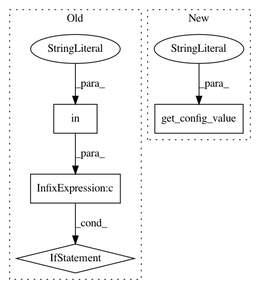

fda0e0e7d1399a404788c33d19677c4a22583138,src/sagemaker/local/image.py,_SageMakerContainer,_create_tmp_folder,#_SageMakerContainer#,379
Before Change
def _create_tmp_folder(self):
root_dir = None
if self.local_config and "container_root" in self.local_config:
root_dir = os.path.abspath(self.local_config["container_root"])
dir = tempfile.mkdtemp(dir=root_dir)
// Docker cannot mount Mac OS /var folder properly see
// https://forums.docker.com/t/var-folders-isnt-mounted-properly/9600
After Change
return host_config
def _create_tmp_folder(self):
root_dir = get_config_value("local.container_root", self.sagemaker_session.config)
if root_dir:
root_dir = os.path.abspath(root_dir)
dir = tempfile.mkdtemp(dir=root_dir)
In pattern: SUPERPATTERN
Frequency: 3
Non-data size: 4
Instances
Project Name: aws/sagemaker-python-sdk
Commit Name: fda0e0e7d1399a404788c33d19677c4a22583138
Time: 2018-05-10
Author: nacho950@gmail.com
File Name: src/sagemaker/local/image.py
Class Name: _SageMakerContainer
Method Name: _create_tmp_folder
Project Name: aws/sagemaker-python-sdk
Commit Name: fda0e0e7d1399a404788c33d19677c4a22583138
Time: 2018-05-10
Author: nacho950@gmail.com
File Name: src/sagemaker/local/local_session.py
Class Name: LocalSagemakerClient
Method Name: create_endpoint
Project Name: aws/sagemaker-python-sdk
Commit Name: fda0e0e7d1399a404788c33d19677c4a22583138
Time: 2018-05-10
Author: nacho950@gmail.com
File Name: src/sagemaker/local/local_session.py
Class Name: LocalSagemakerRuntimeClient
Method Name: __init__